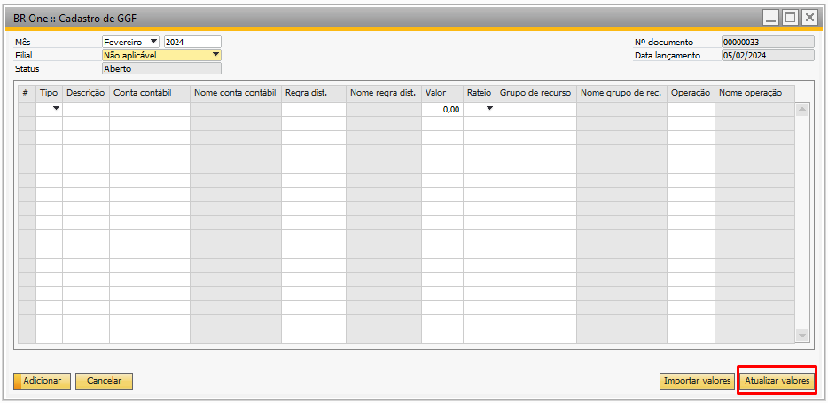

Configurações de Produção - Aba Custos
Para acessar as Configurações de produção é necessário ir no menu:
Administração -> Definição -> Produção -> Configurações de produção
Na Aba Custos da tela de configurações de produção é realizado a configuração dos custos para utilização do módulo de produção.

Simulador de custos
É possível configurar o nível que o add-on irá utilizar para alterar os custos dos itens durante os processos de “Simulador de custo” ou “Simulador de custo - Global”.
{kind=link}
É possível atualizar os preços usando duas configurações distintas, a “Todos os níveis” e a “Item pai”, onde cada uma realiza uma atualização distinta:
Todos os níveis: O campo “Todos níveis” faz com que seja alterado o preço de todos os componentes utilizados no roteiro do item(s) selecionado(s) nas telas de simulador de custo individual ou global.
Item pai: O campo “Item pai” faz com seja alterado apenas o preço do(s) item(s) selecionado(s) no simulador de custo individual ou global.**
GGF antecipado
É possível configurar o GGF antecipado através dos campos abaixo:
{kind=link}
Utilizar GGF antecipado
{kind=link}
Ao realizar a entrada de produto acabado com este parâmetro marcado, será gerado um LCM com o custo antecipado, após gerar este LCM não será mais permitido desmarcá-lo, considerando as seguintes regras:
Quando houver LCM em aberto, que estão com a data de lançamento (mês ou ano) acima do último GGF cadastrado com o status “Fechado”, NÃO será permitido desmarcar a flag.
Caso não contenha nenhum GGF com o status “Fechado”, será apenas considerado se existe LCM aberto (gerado pelo processo de GGF antecipado), se existir NÃO será permitido desmarcar a flag.
Exemplo:
Último GGF com o status fechado: Mês = 04 e Ano = 2022.
Caso tenha LCM em aberto para o Mês = 05 e Ano = 2022, NÃO será permitido desmarcar a flag “Utilizar GGF antecipado”.
Caso NÃO tenha LCM em aberto (não foi gerado ou foi cancelado) para o Mês = 05 e Ano = 2022, será permitido desmarcar a flag “Utilizar GGF antecipado”.
Quando não for permitido desmarcar, caso seja feita a tentativa, a seguinte mensagem será apresentada:
{kind=link}
BR One :: Não é permitido desmarcar o flag ‘Utilizar GGF antecipado’ pois já foram feitos lançamentos pelo processo de GGF antecipado.
Quando for permitido desmarcar, ao desmarcar o parâmetro a conta de GGF antecipado deve ser removida, será apresentado uma mensagem perguntando se deseja limpar a conta e continuar.
{kind=link}
Caso seja clicado em “Sim”, será apagado a conta GFF antecipado e as configurações serão salvas.
Caso seja clicado em “Não”, o processo irá ser interrompido e não será salvo.
Conta GGF antecipado
{kind=link}
No campo “Conta GGF antecipado” deve ser selecionada uma conta na qual será enviado o valor do custo antecipado. Apenas contas do Tipo Receita ou Despesa serão listadas.
Caso o parâmetro “Utilizar GGF antecipado” esteja marcado, ao tentar salvar sem informar essa conta, a seguinte mensagem será apresentada:
{kind=link}
BR One :: Caso esteja configurado para utilizar o GGF antecipado é necessário informar a conta de GGF antecipado
Custo múltiplos recursos
{kind=link}
Deverá ser informado como será realizado o cálculo do custo hora, quando um grupo de recurso conter mais de um recurso. Como padrão, esse campo será preenchido como “Médio”. Podendo ser:
Mínimo: Recupera o MENOR custo hora dos recursos do grupo de recurso da operação da Ordem Produção (OP).
Médio: Recupera TODOS os custos hora de todos os recursos do grupo de recurso da operação da Ordem Produção (OP), realiza a soma e divide pela quantidade de recursos no grupo de recurso.
Máximo: Recupera o MAIOR custo hora dos recursos do grupo de recurso da operação da Ordem Produção (OP).
Uma Ordem de produção com um grupo de recurso MAQ-01, possui 2 recursos:
No cadastro do grupo de recurso MAQ-01 o custo hora é 80,00
No cadastro do recurso RC-MQ010 o custo hora é 00,00
No cadastro do recurso RC-MQ020 o custo hora é 60,00
Mínimo: O custo hora será 60,00
Médio: O custo hora será a soma 80,00 + 60,00 = 140,00, dividido pela quantidade de recursos, ficará: 140,00/ 2 = 70,00
Máximo: O custo hora será 80,00
No exemplo dado, o custo do recurso RC-MQ010 é de 80,00. Essa influência de custo decorre da regra que substitui o valor zero pelo custo do grupo de recurso. Uma Ordem de produção com um grupo de recurso MAQ-01, possui 2 recursos:
No cadastro do grupo de recurso MAQ-01 o custo hora é 65,00
No cadastro do recurso RC-MQ010 o custo hora é 00,00
No cadastro do recurso RC-MQ020 o custo hora é 00,00
Mínimo: O custo hora será 65,00
Médio: O custo hora será a soma 65,00 + 65,00 = 130,00, dividido pela quantidade de recursos, ficará: 130,00/ 2 = 65,00
Máximo: O custo hora será 65,00
No exemplo dado, o custo do recurso RC-MQ010 e RC-MQ020 é de 65,00. Essa influência de custo decorre da regra que substitui o valor zero pelo custo do grupo de recurso. Uma Ordem de produção com um grupo de recurso MAQ-01, possui 2 recursos:
No cadastro do grupo de recurso MAQ-01 o custo hora é 00,00
No cadastro do recurso RC-MQ010 o custo hora é 00,00
No cadastro do recurso RC-MQ020 o custo hora é 60,00
Mínimo: O custo hora será 00,00
Médio: O custo hora será a soma 60,00 + 00,00 = 60,00, dividido pela quantidade de recursos, ficará: 60,00/ 2 = 30,00
Máximo: O custo hora será 60,00
No exemplo dado, o custo do recurso RC-MQ010 é de 00,00. Essa influência de custo decorre da regra que substitui o valor zero pelo custo do grupo de recurso.
Fechamento de custos
{kind=link}
No campo “Fechamento de custos”, é necessário definir qual período será considerado ao realizar a fechamento dos custos.
Existem duas opções disponíveis:
Previsto: (Coluna Tempo planejado da OP): Nessa opção, irá refazer o cálculo da OP para calcular o tempo planejado.
Apontamento de horas: Nessa opção, o tempo considerado para o fechamento dos custos será baseado nas horas apontadas para OP na tela de apontamento de produção..
Tipo de Rateio (Cadastro GGF)
{kind=link}
Se a opção “Manual” for selecionada, o botão “Atualizar valores” ficará bloqueado. Isso permite o preenchimento de duas ou mais linhas com a mesma conta contábil, sem a necessidade de preencher a regra de distribuição.
{kind=link}
Caso a opção “Automático” seja marcada, o botão Atualizar valores ficará desbloqueado.
{kind=link}
Conta de alocação temporária de custos
{kind=link}
No campo “Conta de alocação temporária de custos”, você deve selecionar uma conta na qual a primeira parte do cálculo será enviada. O que eventualmente ficar pendente ficará nela e não nas contas do GGF.
Conta para apontamentos de refugo
{kind=link}
Nesse campo deve ser configurada uma conta contábil para ser utilizada nos apontamentos de refugo. Se não houver conta definida, será utilizada a conta de material em processo.
Conta de estoque não alocado
{kind=link}
Esse campo foi criado para preencher uma conta contábil que será utilizada no processo de fechamento de custo, quando o estoque do último dia do processamento for maior que 0 e o estoque do dia atual do processamento for igual a 0.
Liberar filial no fechamento de custo
Permite realizar o cadastro de GGF por filial e simular/processar o fechamento por filial.
Para bases multi-filial, o funcionamento do parâmetro é o seguinte:
Ao marcar o parâmetro, a tela de Cadastro de GGF permite que seja selecionado a filial, o fechamento de custo será baseado apenas nas OPs da filial do cadastro do GGF selecionado.
Ao desmarcar o parâmetro, na tela de Cadastro de GGF, será apresentada a opção “Não aplicável”, o fechamento de custo será baseado em todas as OPs da base.
Para ativar ou desativar a funcionalidade não poderá ter cadastro de GGF em aberto.
Se a base não for multi-filial e o parâmetro for selecionado, uma mensagem informativa será exibida da seguinte forma:
“BR One :: A base não é multi-filial, portanto não pode ser habilitado a configuração ‘Liberar filial no fechamento de custo’, aba ‘Custos’.”